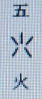
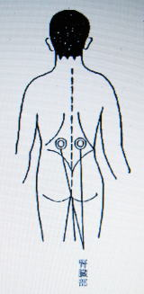

夜昼転換と浄霊の原理について ２
明主様御講話 「昼の世界になったので浄霊は生まれた」 （昭和15年5月4日）
「森羅万象は三つの元素から成り立っている。これに離れているものは一つもない。
火、水、土の本体は、日、月、地なり。
いまの学説では、星は太陽より上にあり、と唱うれど、これは太陽より上の星は絶対ないので、月より下と月より上とある。
星には火の星と水の星とあり、
水の星は青白く、

となる。
火の星は赤い、

となる。
すなわち、五六七は火と水と土ということになる。
五六七は六六六となり、六が三つゆえ三六となる。
このうちの一つが下へ行って、五六七という形になる。
これは非常に神秘のあることである。
すなわち、一つが下へ行って土となったことはおもしろいが、いま、説明はできない。
緯の火水土は
霊・・・霊気 火
空・・・空気 水
現・・・物質 土
すべて物質は土から出て土に還元する。
われわれが住んでいる全体が物、空、霊密合している。
経も緯も決して別々ではない、ピッタリ密合してる。
物質の中に空気あり、空気に霊気あり、緯の働きになっている。
緯の三段を人類は知らなかった。
火と水といっても、火のみでなく水のみでもない。
火の中に水あり、水の中に火あり、ただ水は水が主であり、火は火が主である。
水は火なくば氷魂なり。氷がとけて初めて動く。
故に、火と水はどっちも離れていないもので、共同作業である。
人間で言えば夫婦と同じこと、陰陽である。人類は夫婦があって持続してゆく。
空間の火と水（調和）というものが、この治療に非常に関係がある。
昼・・・明
夜・・・暗
これも陰陽で火と水になる。
火の場合 昼は火主水従
水の場合 夜は水主火従 夜は月が出る。
月は氷塊である。昼は太陽が支配する。
人類はいままで緯の三段を知らなかった。
それは夜だったゆえである。
日がなかった、隠れていた。霊気の世界を知らなかった。
日本は明治以前まで鎖国を叫んだ。
徳川の天下がなければ、フィリピンなど大いに海外発展していたものをと言う人がある。
ところが時期が昼になっていないため絶対鎖国した。
夜の時代ゆえ、国威を外国へ及ぼすことはできなかった。
これは天地自然の理だが、明治になってから自然に世界へ知れてきた。
ぺリーなど来て日本の存在を世界へ知らした。
これは夜の故で、昼になるとどうしても世界を照らしてゆかねばならぬ。
日本の知られざりしごとく、霊気のことは知られなかった。
人類は霊気の世界を知ることになる。私はごく先んじて知った。
霊界は火が主
空気界は水が主
人間は三つの元素によりなる。
肉体・・・現象・・・ 土（骨皮など） ＝三
水分に属するもの・・・水（医学では七十％ありという）＝七
人間の霊・・・ 火（これがはっきり分からぬ） ＝十
故に人間は霊と体で生きてる。
カラダに霊（ひ）止まりてヒトになる。
霊は肉体と同じ形。
肉体が使用に堪えなければ霊は脱ける法則になってる。
サック壊れれば霊止まれぬ。
例えば負傷して何升か出血すると、霊は肉体に止まることができなくなる。

霊界はどこにあるか、われわれが呼吸しているところにこのまま霊界は存在する。
いま肉体が歩いてるとき、霊体は霊界を歩いている。
故に、こういう霊界にはいろんな霊がいる。
こんな話をせられていれば、霊界の霊は何万となく来て聞いている。
そして私の声を霊は聞いている。
中には聞けないのもいる。
諸士に憑ってその耳によって聞いている。
死の前知人に霊が別れに行く例があるごとく、霊界に起ったのが現界へ従う。
故に、霊界と人間の霊身は非常に重大なものである。
故に、人間は始終霊界と現界を往き来している。
霊界はだいたい浄化作用をする所、人間が現界でいろいろ罪をつくって曇りが霊身に非常に溜まる。
あまり曇りのひどいのは人間になれず畜生道へ行く。
再生 人間が人間に生まる。
転生 人間以外のものから人間に生まれる、畜生などより人間に生まれ代わる。
人間は畜生のような心行をもつと、それ相応におつる。
猫、犬、鳥など、スパイや探偵など犬に、だませば狐。獣は苦しむから罪がゆるされる。
そして人間に生まれる。これを転生という。
現界の死は霊界で誕生という。極楽へ行く霊は誕生祝いをする。
楽を奏し、花の咲いてる所へみんなで迎える。
これはよい往生する人などがみる。
きれいな着物を着て、音楽を奏し、大勢の人が駕籠（かご）や御輿（みこし）をもって迎えに来る。
そしてそれにのせ、かついで行く。
霊は無限に新しい霊ができてる。
神仏を信ずるという霊は古く、神代の時代に何度か生まれた霊である。
神はふつうの人間の形をしてすばらしい不思議な力をもっていた。
そういう記憶があるから信仰し得る。
神というものがなくなってから生まれた霊は神のことが分からぬ、神の経験がないから分からぬ。信仰さすことができぬ。
ちょっと神の話をしてピンとくる人は、神の経験があり、ぜんぜん通じぬ人はその後に生まれた新しい霊である。
どんな人でも罪を犯さぬ人はない。
なにも悪いことをしないという人も、どんなに罪を犯してるかしらぬ。
キリスト教など、女をよしと思っただけで姦淫の罪を犯したことになるという。
つまり心の罪だが、これはいくぶんか罪になって溜まるが、いっぽうで非常に良いことをすれば消せる。
悪いことをしなくとも良いことをする人は少ない。
そういうのがなかなか曇りとなって溜まる。
そういうのは霊界で浄化される。
現界で執着のない人は霊界で速く浄化作用される。
二百年くらい霊界にいなくては充分浄化は行われぬ。
痛みは、・・・毒は一部へ溜まるとともに固まる作用が起る。
あらゆるものはある程度固まると溶ける作用が必ず起る。
人間の霊体はだいたい光っているもので、ボーッとしたような朧月夜のような光をもっているもので、
その光が絶えず強くなったり弱くなったりするものである。
善事を考えると光り、悪事を考えると曇る。
ちょうど晴天と曇天のときのあるごとし。
霊体の一部に曇りがあると毒素があり、どす暗（ぐろ）くなってる。
自然なれば熱が出て溶け、下痢、嘔吐または腫れものなどになって出る。
痛みと熱は浄化の二大作用、これを光によりてとる場合、ごく濃い部分のみが残り、
それは下痢などにて出れど、すでに毒素の力なく苦痛なく排除さる。
人間の霊体の光は、ふつうの人は一寸くらい出てるもので、病気になればだんだん薄くなる。
強い人は一尺も二尺もある。
これは常人ではない。
曇り生ずるは自動的と他動的とあり、自動的は罪による。
体から曇る場合は薬剤。
故に人間は元来病気がないのが原則で、病気は人間が作るものである。
毒素とはなにか、霊的の罪穢から湧く。天然痘、尿毒、薬毒、このほかにもあるが、だいたい三つと思えばいい。
天然痘・・・紅潮色の豆粒のごときもの簇出（そうしゅつ）し、そこから膿が出て治るもの。
結核なども、瘍（よう）、疔（ちょう）などだいたい天然痘の毒。
小便は水分の汚いもの、汚いものを水分にして出す働き、汚いものはだいたい毒素である。
栄養にならぬもの、毒の処分機関。

（二重丸表示箇所が腎臓部）
食物の毒は腎臓で消せるが、服むべからざるものの毒は消せない。
人間は薬を服むようにできていない。
八、九消化すると一、二残って溜まり、脊髄を通って頭へ行き、顔面、顎などへも行くゆえ、尿毒といっても原因は薬毒である。
故に、薬毒、天然痘、尿毒はそれぞれ混合しているのである。
圧して痛むのは薬毒、非常に痛いのは注射の毒、尿毒の痛みは激しくなく鈍痛が多い。
総じて西洋の薬は強烈である。
天然痘のはあまりに痛みはなく痒いのが多い。
内部にあるときは痛くも痒くもない。
治癒作用を病気といった。
本当いうと病気はない、病むということはない。
血液が循環するとともに霊も非常に活動してる。
血液はきれいの上にもきれいでなくてはならぬ。
きれいなほど健康によく、また非常に朗らかで元気横溢せるは血清らか、血が濁ると人間は元気がない。
血清らかなれば循環早く、早ければ身体の活力の熱強く出る。
故に寒くない。血の濃い人は身体重く、頭重い。
血液きれいになりつつ一とこへ毒が集まり、それが固まりきる。
それを出いいような薄さにする。
それが白帯下（こしけ）、鼻汁、痰などである。
化膿とは薄く出やすくなることである。
出やすい穴をとめるから出難い所から出んとする。
従来の療法は、病気の原因をとらず、治病作用をとる。
そのためまず毒を服んだ。また服むと死ぬ薬を注射した。
レントゲンでその部を殺して、その組織を破壊する。
蛋白とは腎臓のまわりに溜まったものが滲みて出る。
人間の内臓はすべて滲みるようにできている。
蛋白は小便に混った膿である。
浄化作用は九分九厘止め得るが、全部は止め得ない。
嘘ゆえ結局は駄目になる。故に絶対に治らぬ。
夜の世界 水素
昼の世界 火素
昭和六年六月十五日より霊界、空間に火の分子が多くなる。
火は太陽から放射されてくるもの・・・すなわち火と熱である。
人体の曇りに光と熱を放射すればとれる、消す。
霊界に火素が多くなると浄化作用が旺盛になるということは、人間の霊体の曇りがとれるのと同じわけである。
本療法をするほど光が強くなり、毒の魂がある場合自分で治す活動が起る。
故にちょっとの毒も排除されんとし浄化は旺盛になる。
近来結核増加の根本原因はこの点にある。
われわれのほうはもっともっと旺盛にする。
霊界に火素が殖えた。
それを集注する方法を発見した。
そして私を通じて治療士に伝達するわけで、これがすなわち観音力である。
人類を救われる恵みの力である。
いくら観音様でも霊界が夜ではできない。
霊は霊界に属し、火素の世界に属してる。
昼の世界に属してるからこういう治療は生まれた。
いまようやく昼になりかけたところ、昼になるにつれてますます治るようになる。
いまにちょっと手を触れただけで治ることになる。
治療法
まず頸腺および頭へ手をあててみると、どんな人でも必ず熱がある。
擦るのに力を入れては不可、できるだけ細かく何カ所も、いくどもする。
一個の霊体を治療する気持ち、皮下一寸も二寸も奥を擦る気持ちでする。
指も同様中のほうへ放射する気持ちでする。
疫痢で目の吊り上がるのはごく悪性で、疫痢の上に死霊が憑くのである。
執着がないと霊界に落ちつける。
執着が深いと浄化作用の中途で罪がまだ残っているまま落ちつかず、
生まれるが罪がまだ残っているから非常に不幸で、障害者だとか心がゆがんでるとかして生まれる。
故に死ぬ時は現世に心を残さぬほうがよい。
また死ぬ人の近親者は一時は悲しんでも、その悲しみを長く残してはいけない。
なせかというと、生きてる人の執着が影響して早く行く所へ行けぬ。
故に悲しみはなるべく早くなくしたほうが、死んだ人のためによい。
故に霊と体ということが非常に肝腎である。
この療法を本当に知るには霊体の関係を知ることが根本である。」